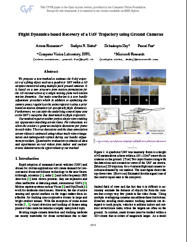

Flight Dynamics-based Recovery of a UAV Trajectory using Ground Cameras1EPFL, Switzerland 2Microsoft Research Redmond, USA CVPR 2017 |
|
| Abstract We propose a new method to estimate the 6-dof trajectory of a ?ying object such as a quadrotor UAV within a 3D airspace monitored using multiple ?xed ground cameras. It is based on a new structure from motion formulation for the 3D reconstruction of a single moving point with known motion dynamics. Our main contribution is a new bundle adjustment procedure which in addition to optimizing the camera poses, regularizes the point trajectory using a prior based on motion dynamics (or speci?cally ?ight dynamics). Furthermore, we can infer the underlying control input sent to the UAV's autopilot that determined its ?ight trajectory. Our method requires neither perfect single-view tracking nor appearance matching across views. For robustness, we allow the tracker to generate multiple detections per frame in each video. The true detections and the data association across videos is estimated using robust multi-view triangulation and subsequently re?ned during our bundle adjustment procedure. Quantitative evaluation on simulated data and experiments on real videos from indoor and outdoor scenes demonstrates the effectiveness of our method. |  |
|
Dataset download About the dataset This dataset contains image sequences, AHRS data, ground truth bounding box annotations (GTBB) of a person observed from the camera onboard the MAV. We provide the following sequences used in the evaluation reported in the paper. mfly-o6 [download] mfly-o7 [download] mfly-o8 [download] mfly-o9 [download] walk-i4 [download] walk-i5 [download] walk-o1 [download] walk-o2 [download] walk-o3 [download] File format Each directory contains the following files. gtbb.txt imu.txt [frame_number].png Ground truth bounding box annotations Each line of the gtbb.txt file stores the 2d bounding box position -- [left, top, width, height] for each frame. Here is an example. 252,203,56,137 This indicates that the top-left corner of the bounding box is at pixel (252,203) and the width and height of the bounding box is 56 and 137 pixels respectively. The line number indicates the frame number. IMU information Each line of the imu.txt file contains the following information. [frame number] , [time of frame captured / millisecond] , [time of IMU captured / millisecond], [roll / degree], [pitch / degree], [yaw / degree] The frame number is directly associated in one-to-one fashion with the image files. |
|